Index
This section
This section is still under development!
This is a section that describes in detail all components related to simulated traffic in the Environment prefab.
Architecture
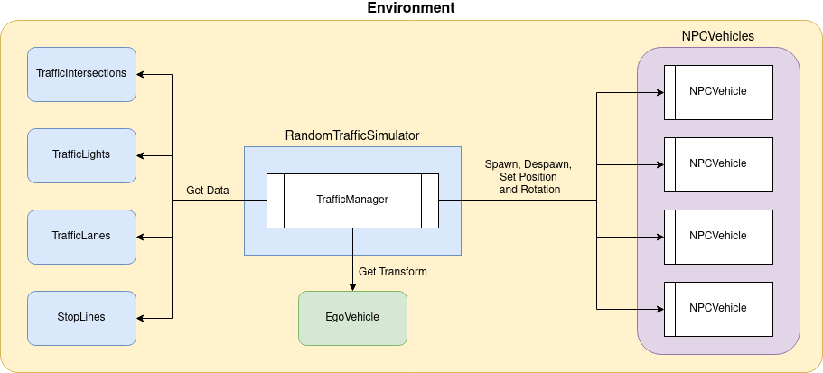
The random traffic system consists of the following components:
-
It is a top level interface meant to be used on the Unity scene.
TrafficManagerruns all elements needed for a successful traffic simulation. This component manages allTrafficSimulatorsso they don't work against each other. It gives you the possibility to configure theTrafficSimulators. -
TrafficSimulatorTechnically it is not a component, it is crucial to understand what it is and what it does in order to correctly configure the
TrafficManager.TrafficSimulatormanagesNPCVehiclesspawning. There can be manyTrafficSimulatorson the scene. They are added and configured in theTrafficManagercomponent. EveryTrafficSimulatormanages some part of the traffic it is responsible for - meaning it has spawned theNPCVehiclesand set their configuration.RandomTrafficSimulator- spawns and controlsNPCVehiclesdriving randomlyRouteTrafficSimulator- spawns and controlsNPCVehiclesdriving on a defined route
TrafficSimulator inaccessibility
It is not possible to get direct access to the
TrafficSimulator. It should be added and configured through theTrafficManagercomponent. -
TrafficLane,TrafficIntersectionandStopLineThese components represent traffic entities. They are used to control and manage the traffic with respect to traffic rules and current road situation.
-
The vehicle models (NPCs) spawned by one of the
TrafficSimulators. They are spawned according to theTrafficSimulatorconfiguration and either drive around the map randomly (when spawned by aRandomTrafficSimulator) or follow the predefined path (when spawned by aRouteTrafficSimulator).NPCVehiclesare managed by one central knowledge base.
The process of spawning a NPCVehicle and its later behavior control is presented on the following sequence diagram.
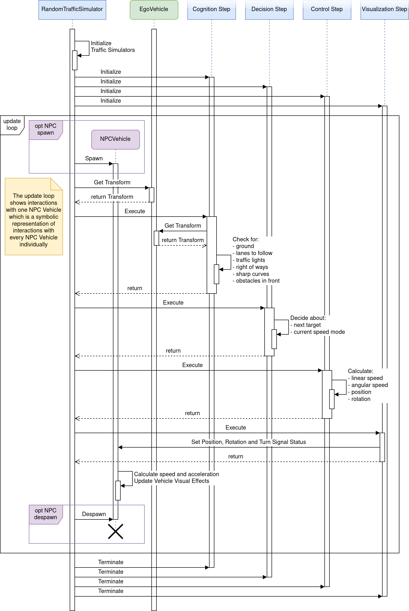
Sequence Diagram Composition
Please note that the diagram composition has been simplified to the level of GameObjects and chosen elements of the GameObjects for the purpose of improving readability.
Lanelet2
Lanelet2 is a library created for handling a map focused on automated driving.
It also supports ROS and ROS2 natively.
In AWSIM Lanelet2 is used for reading and handling a map of all roads.
Specifically it does contain all TrafficLanes and StopLines.
You may also see us referring to the actual map data file (*.osm) as a Lanelet2.
Lanelet2 official page
If you want to learn more we encourage to visit the official project page.
RandomTrafficSimulator
Nomenclature
Please note that
are named RandomTrafficSimulator.
Keep this in mind when reading the following page - so you don't get confused.
RandomTrafficSimulator simulates traffic with respect to all traffic rules. The system allows for random selection of car models and the paths they follow. It also allows adding static vehicles in the simulation.
Link in the default Scene
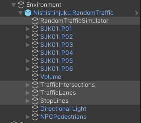
The RandomTrafficSimulator consists of several GameObjects.
RandomTrafficSimulator- this is an Object consisting of a Traffic Manager (script).
You can learn more about it here.TrafficIntersections- this is a parent Object for allTrafficIntersections.
You can learn more about it here.TrafficLanes- this is a parent Object for allTrafficLanes.
You can learn more about it here.StopLines- this is a parent Object for allStopLines.
You can learn more about it here.
Components
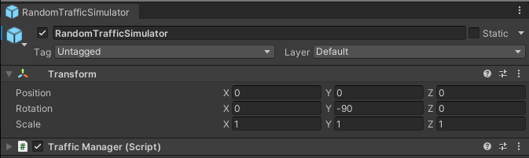
RandomTrafficSimulator only has one component: Traffic Manager (script) which is described below.
TrafficManager (script)
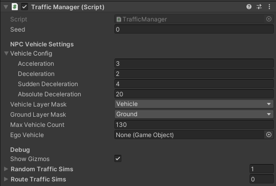
Traffic Manager (script) is responsible for all of top level management of the NPCVehicles.
It managed spawning of NPCVehicles on TrafficLanes.
TrafficManager uses the concept of TrafficSimulators.
One TrafficSimulator is responsible for managing its set of NPCVehicles.
Every TrafficSimulator spawns its own NPCVehicles independently.
The vehicles spawned by one TrafficSimulator do respect its configuration.
TrafficSimulators can be interpreted as NPCVehicle spawners with different configurations each.
Many different TrafficSimulators can be added to the TrafficManager.
If a random mode is selected (RandomTrafficSimulator) then NPCVehicles will spawn in random places (from the selected list) and drive in random directions.
To be able to reproduce the behavior of the RandomTrafficSimulator a Seed can be specified - which is used for the pseudo-random numbers generation.
TrafficManager script also configures all of the spawned NPCVehicles, so that they all have common parameters
Acceleration- the acceleration used by the vehicles at all times when accelerating.Deceleration- the value of deceleration used in ordinary situations.Sudden Deceleration- deceleration used when standardDecelerationis not sufficient to avoid accident.Absolute Deceleration- value of deceleration used when no other deceleration allows to avoid the accident.
The Vehicle Layer Mask and Ground Layer Mask are used to make sure all vehicles can correctly interact with the ground to guarantee simulation accuracy.
Max Vehicle Count specifies how many NPCVehicles can be present on the scene at once.
When the number of NPCVehicles on the scene is equal to this value the RandomTrafficSimulator stops spawning new vehicles until some existing vehicles drive away and disappear.
The EgoVehicle field provides the information about Ego vehicle used for correct behavior ofNPCVehicleswhen interacting with Ego.
Show Gizmos checkbox specifies whether the Gizmos visualization should be displayed when running the simulation.
Gizmos performance
Gizmos have a high computational load. Enabling them may cause the simulation to lag.
As mentioned earlier - TrafficManager may contain multiple TrafficSimulators.
The two available variants of TrafficSimulator are described below
TrafficSimulators should be interpreted as spawning configurations for some group of NPCVehicles on the scene.
Random Traffic
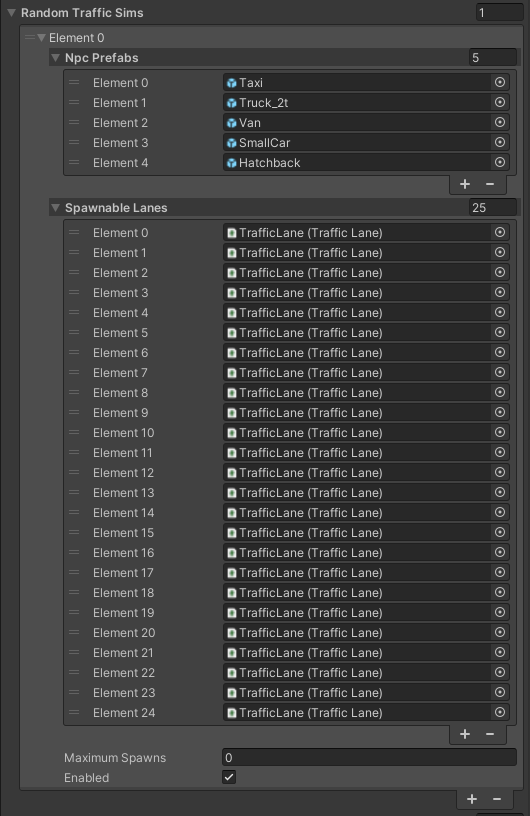
When using RandomTrafficSimulator the NPCVehicle prefabs (NPC Prefabs) can be chosen as well as Spawnable Lanes.
The later are the only TrafficLanes on which the NPCVehicles can spawn.
Upon spawning one of the Spawnabe Lanes is chosen and - given the vehicle limits are not reached - one random NPCVehicle from the Npc prefabs list is spawned on that lane.
After spawning, the NPCVehicle takes a random route until it drives out of the map - then it is destroyed.
The Maximum Spawns field specifies how many Vehicles should be spawned before this TrafficSimulator stops working.
Set to 0 to disable this restriction.
Route Traffic
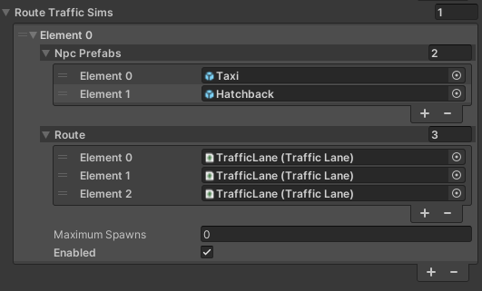
When using Route traffic Simulator the NPCVehicle prefabs (NPC Prefabs) as well as Route can be chosen.
The later is an ordered list of TrafficLanes that all spawned vehicles will drive on.
Given the vehicle limit is not reached - the RouteTrafficSimulator will spawn one of the Npc Prefabs chosen randomly on the first Route element (Element 0).
After the first vehicle drives off the next one will spawn according to the configuration.
It is important for all Route elements to be connected and to be arranged in order of appearance on the map.
The NPCVehicle disappears after completing the Route.
The Maximum Spawns field specifies how many Vehicles should be spawned before this TrafficSimulator stops working.
Set to 0 to disable this restriction.
Parameter explanation
| Parameter | Description |
|---|---|
| General Settings | |
| Seed | Seed value for random generator |
| Ego Vehicle | Transform of ego vehicle |
| Vehicle Layer Mask | LayerMask that masks only vehicle(NPC and ego) colliders |
| Ground Layer Mask | LayerMask that masks only ground colliders of the map |
| Culling Distance | Distance at which NPCs are culled relative to EgoVehicle |
| Culling Hz | Culling operation cycle |
| NPCVehicle Settings | |
| Max Vehicle Count | Maximum number of NPC vehicles to be spawned in simulation |
| NPC Prefabs | Prefabs representing controlled vehicles. They must have NPCVehicle component attached. |
| Spawnable Lanes | TrafficLane components where NPC vehicles can be spawned during traffic simulation |
| Vehicle Config | Parameters for NPC vehicle controlSudden Deceleration is a deceleration related to emergency braking |
| Debug | |
| Show Gizmos | Enable the checkbox to show editor gizmos that visualize behaviours of NPCs |
Traffic Light (script)
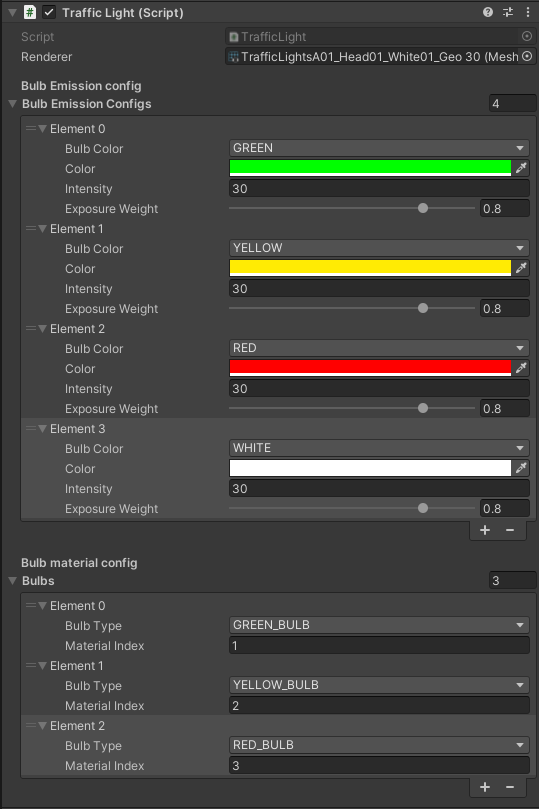
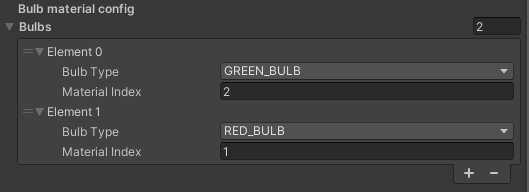
Traffic Light (script) is a component added to every TrafficLight on the scene.
It is responsible for configuring the TrafficLight behavior - the bulbs and their colors.
The Renderer filed points to the renderer that should be configured - in this case it is always a TrafficLight renderer.
Bulbs Emission Config is a list describing available colors for this Traffic Light.
Every element of this list configures the following
Bulb Color- the name of the configured color that will be used to reference this colorColor- the actual color with which a bulb should light upIntensity- the intensity of the colorExposure Weight- how bright should the color be when lighting up
The Bulb Material Config is a list of available bulbs in a given Traffic Light.
Every element describes a different bulb.
Every bulb has the following aspects configured
Bulb Type- the name that will be usd to reference the configured bulbMaterial Index- The index of a material of the configured bulb. This is an index of a sub-mesh of the configured bulb in the Traffic Light mesh. The material indices are described in detail here and here.
TrafficIntersections

TrafficIntersection is a representation of a road intersection.
It consists of several components.
TrafficIntersection is used in the Scene for managing TrafficLights.
All Traffic Lights present on one Traffic Intersection must be synchronized - this is why the logic of TrafficLight operation is included in the TrafficIntersection.
Link in the default Scene
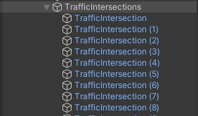
Every TrafficIntersection has its own GameObject and is added as a child of the aggregate TrafficIntersections Object.
TrafficIntersections are elements of an Environment, so they should be placed as children of an appropriate Environment Object.
Components
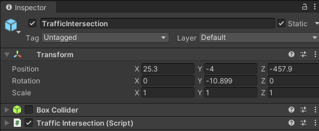
TrafficIntersection has the following components:
- Box Collider - marks the area of the Traffic Intersection, it should cover the whole intersection area
- Traffic Intersection (script) - controls all Traffic Lights on the given intersection according to the configuration
Collider
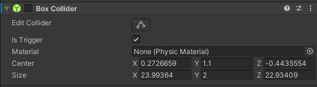
Every TrafficIntersection contains a Box Collider element.
It needs to accurately cover the whole area of the TrafficIntersection.
Box Collider - together with the Traffic Intersection (script) - is used for detecting vehicles entering the TrafficIntersection.
Traffic Intersection (script)
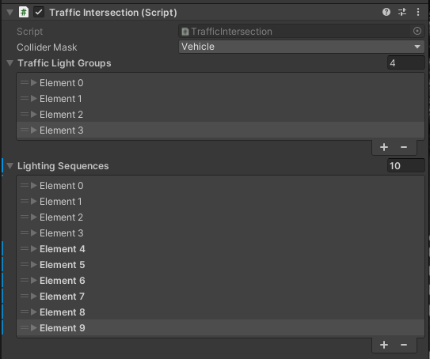
Traffic Intersection (script) is used for controlling all TrafficLights on a given intersection.
The Collider Mask field is a mask on which all Vehicle Colliders are present.
It - together with Box Collider - is used for keeping track of how many Vehicles are currently present on the Traffic Intersection.
The Traffic Light Groups and Lighting Sequences are described below.
Traffic Light Groups
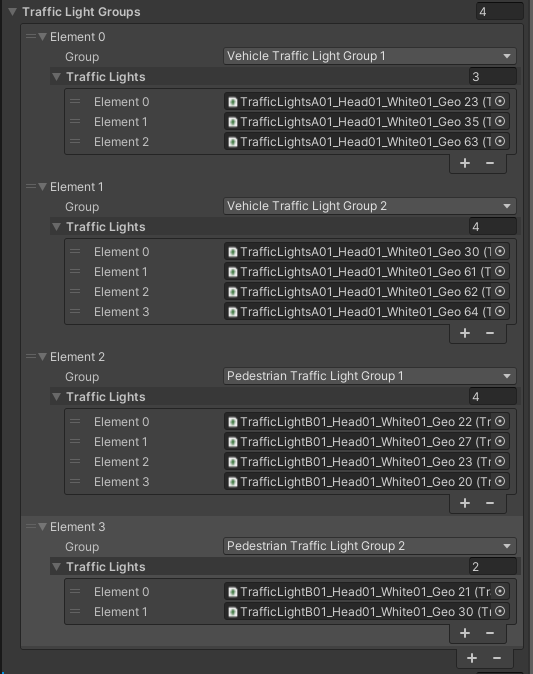
Traffic Light Group is a collection of all Traffic Lights that are in the same state at all times.
This includes all redundant Traffic Lights shining in one direction as well as the ones in the opposite direction.
In other words - as long as two Traffic Lights indicate exactly the same thing they should be added to the same Traffic Light Group.
This grouping simplifies the creation of Lighting Sequences.
Lighting Sequences
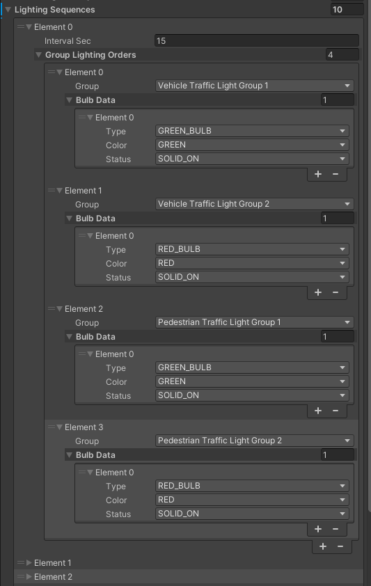
Lighting Sequences is the field in which the whole intersection Traffic Lights logic is defined.
It consists of many different Elements.
Each Element is a collection of Orders that should take an effect for the period of time specified in the Interval Sec field.
Lighting Sequences Elements are executed sequentially, in order of definition and looped - after the last element sequence goes back to the first element.
The Group Lighting Orders field defines which Traffic Light Groups should change their state and how.
For every Group Lighting Orders Element the Traffic Lights Group is specified with the exact description of the goal state for all Traffic Lights in that group - which bulb should light up and with what color.
One Lighting Sequences Element has many Group Lighting Orders, which means that for one period of time many different orders can be given.
E.g. when Traffic Lights in one direction change color to green - Traffic Lights in the parallel direction change color to red.
Traffic Light state persistance
If in the given Lighting Sequences Element no order is given to some Traffic Light Group - this Group will keep its current state.
When the next Lighting Sequences Element activates - the given Traffic Light Group will remain in an unchanged state.
Lighting Sequence Sample - details
| Description | Editor |
|
Traffic Lights in Pedestrian Group 1 change color to flashing green. Other Groups keep their current state. This state lasts for 5 seconds. |
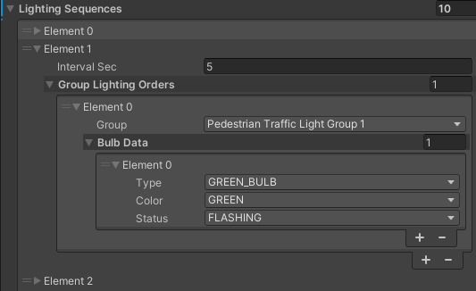 |
|
Traffic Lights in Pedestrian Group 1 change color to solid red. Other Groups keep their current state. This state lasts for 1 second. |
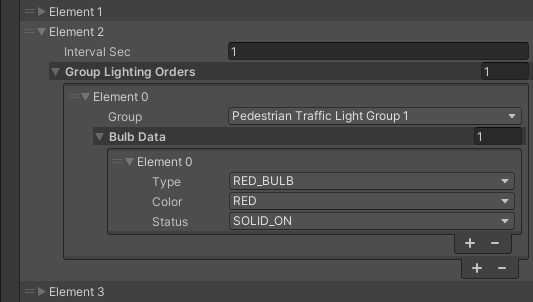 |
|
Traffic Lights in Vehicle Group 1 change color to solid yellow. Other Groups keep their current state. This state lasts for 5 seconds. |
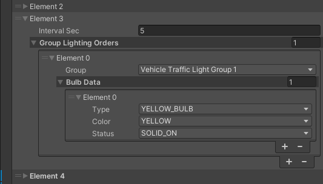 |
|
Traffic Lights in Vehicle Group 1 change color to solid red. Other Groups keep their current state. This state lasts for 3 seconds. |
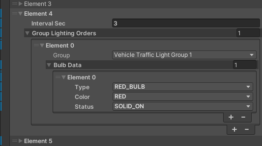 |
|
Traffic Lights in Vehicle Group 2 change color to solid green. Traffic Lights in Pedestrian Group 2 change color to solid green. Other Groups keep their current state. This state lasts for 15 seconds. |
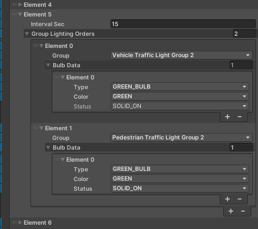 |
|
Traffic Lights in Pedestrian Group 2 change color to flashing green. Other Groups keep their current state. This state lasts for 5 seconds. |
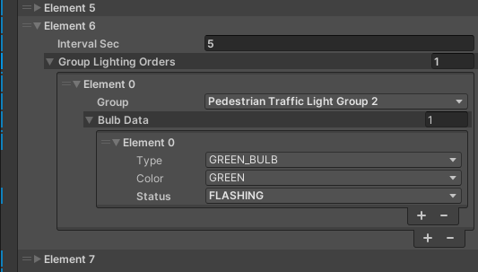 |
|
Traffic Lights in Pedestrian Group 2 change color to solid red. Other Groups keep their current state. This state lasts for 1 second. |
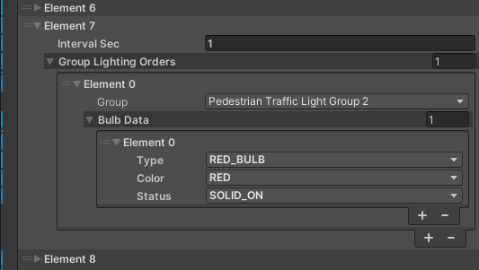 |
|
Traffic Lights in Vehicle Group 2 change color to solid yellow. Other Groups keep their current state. This state lasts for 5 seconds. |
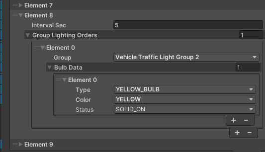 |
|
Traffic Lights in Vehicle Group 2 change color to solid red. Other Groups keep their current state. This state lasts for 3 second. Sequence loops back to the first element of the list. |
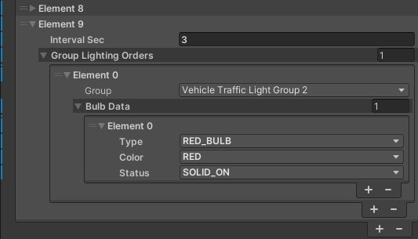 |
TrafficLanes
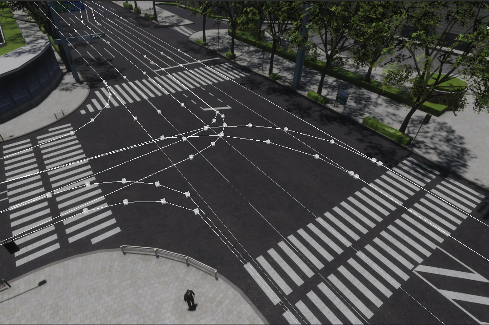
TrafficLane is a representation of a short road segment.
It consists of several waypoints that are connected by straight lines.
TrafficLanes are used as a base for a RandomTrafficSimulator.
They allow NPCVehicles to drive on the specific lanes on the road and perform different maneuvers with respect to the traffic rules.
TrafficLanes create a network of drivable roads when connected.
Link in the default Scene
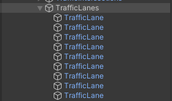
Every TrafficLane has its own GameObject and is added as a child of the aggregate TrafficLanes Object.
TrafficLanes are an element of an Environment, so they should be placed as children of an appropriate Environment Object.
TrafficLanes can be imported from the lanelet2 *.osm file.
Components
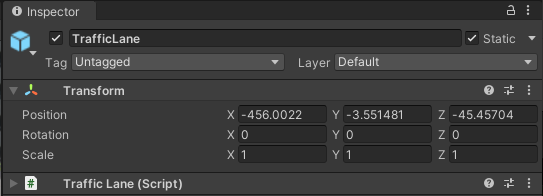
TrafficLane consists of an Object containing Traffic Lane (script).
TrafficLane has a transformation property - as every Object in Unity - however it is not used in any way.
All details are configured in the Traffic Lane (script), the information in Object transformation is ignored.
Traffic Lane (script)
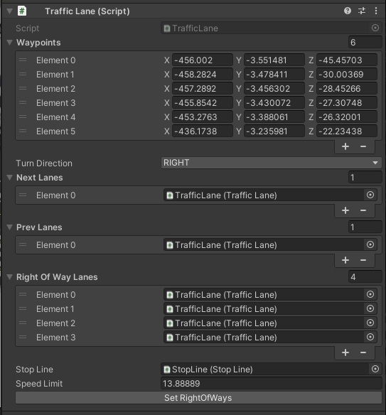
Traffic Lane (script) defines the TrafficLane structure.
The Waypoints field is an ordered list of points that - when connected with straight lines - create a TrafficLane.
Traffic Lane (script) coordinate system
Waypoints are defined in the Environment coordinate system, the transformation of GameObject is ignored.
Turn Direction field contains information on what is the direction of this TrafficLane - whether it is a right or left turn or straight road.
Traffic lanes are connected using Next Lanes and Prev Lanes fields.
This way individual TrafficLanes can create a connected road network.
One Traffic Lane can have many Next Lanes and Prev Lanes.
This represents the situation of multiple lanes connecting to one or one lane splitting into many - e.g. the possibility to turn and to drive straight.
Right Of Way Lanes are described below.
Every TrafficLane has to have a Stop Line field configured when the Stop Line is present on the end of the TrafficLane.
Additionally the Speed Limit field contains the highest allowed speed on given TrafficLane.
Right Of Way Lanes
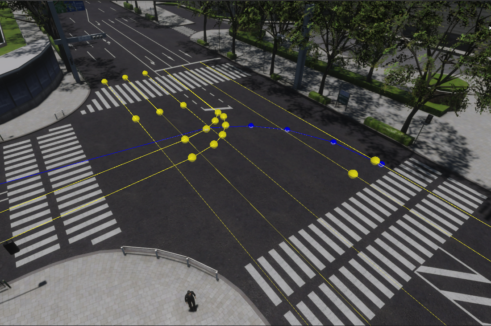
Right Of Way Lanes is a collection of TrafficLanes.
Vehicle moving on the given TrafficLane has to give way to all vehicles moving on every Right Of Way Lane.
It is determined based on basic traffic rules.
Setting Right Of Way Lanes allows RandomTrafficSimulator to manage all NPCVehicles so they follow traffic rules and drive safely.
In the Unity editor - when a TrafficLane is selected - aside from the selected TrafficLane highlighted in blue, all Right Of Way Lanes are highlighted in yellow.
Right Of Way Lanes Sample - details
The selected TrafficLane (blue) is a right turn on an intersection.
This means, that before turning right the vehicle must give way to all vehicles driving from ahead - the ones driving straight as well as the ones turning left.
This can be observed as TrafficLanes highlighted in yellow.

StopLines
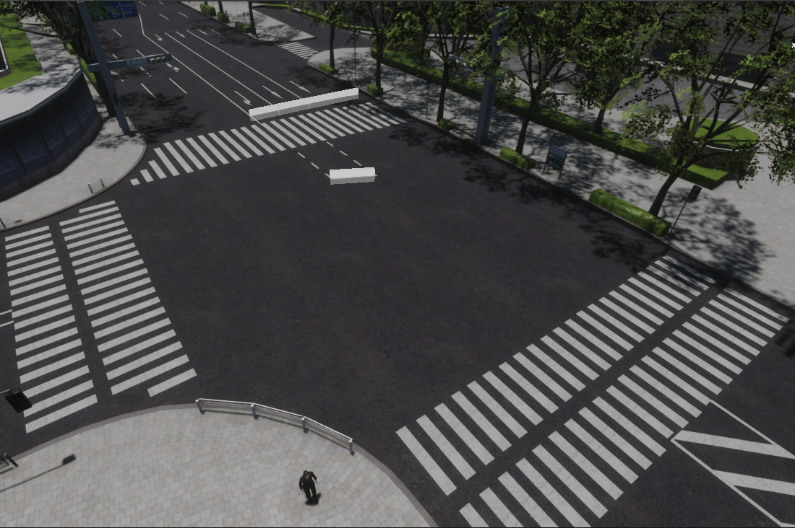
StopLine is a representation of a place on the road where vehicles giving way to other vehicles should stop and wait.
They allow RandomTrafficSimulator to manage NPCVehicles in safe and correct way - according to the traffic rules.
All possible locations where a vehicle can stop in order to give way to other vehicles - that are enforced by an infrastructure, this does not include regular lane changing - need to be marked with StopLines.
Link in the default Scene
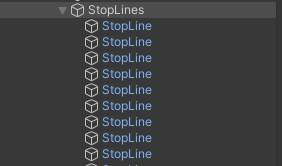
Every StopLine has its own GameObject and is added as a child of the aggregate StopLines Object.
Stop Lines are an element of an Environment, so they should be placed as children of an appropriate Environment Object.
StopLines can be imported from the lanelet2 *.osm file.
Components
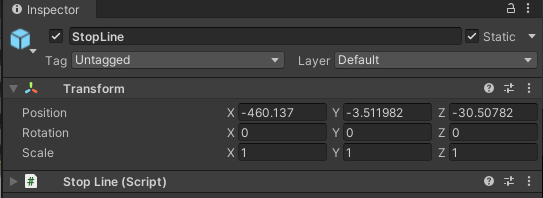
StopLine consists of an Object containing Stop Line (script).
Stop Line has a transformation property - as every Object in Unity - however it is not used in any way. All details are configured in the Traffic Lane (script), the information in Object transformation is ignored.
Stop Line (script)
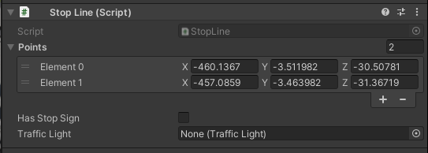
Stop Line (script) defines StopLine configuration.
The Points field is an ordered list of points that - when connected - create a StopLine.
The list of points should always have two elements that create a straight StopLine.
Stop Line (script) coordinate system
Points are defined in the Environment coordinate system, the transformation of GameObject is ignored.
The Has Stop Sign field contains information whether the configured StopLine has a corresponding StopSign on the scene.
Every Stop Line needs to have a Traffic Light field configured with the corresponding Traffic Light.
This information allows the RandomTrafficSimulator to manage the NPCVehicles in such a way that they respect the Traffic Lights and behave on the Traffic Intersections correctly.
Gizmos
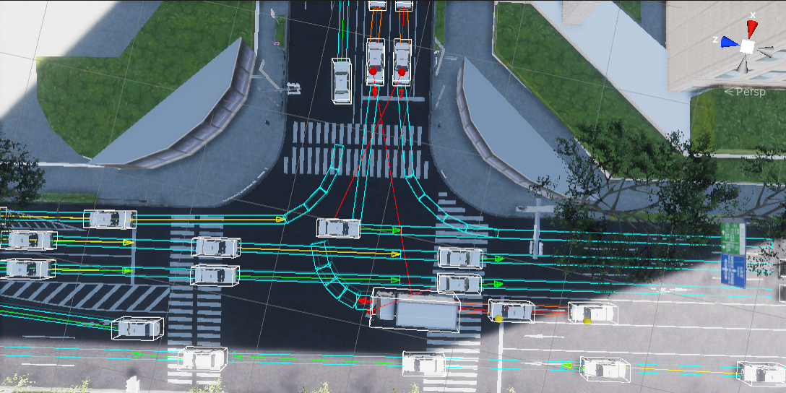
Gizmos are a in-simulation visualization showing current and future moves of the NPCVehicles.
They are useful for checking current behavior of NPCs and its causes.
On the Scene they are visible as cuboid contours indicating which TrafficLanes will be taken by each vehicle in the near future.
Gizmos computing
Gizmos have a high computational load. Please disable them if the simulation is laggy.